Analisis exploratorio de los datos#
import pandas as pd
import matplotlib.pyplot as plt
import numpy as np
from scipy.stats import fisher_exact
import math
import seaborn as sns
table = np.array([[21, 14],
[15, 3]])
# Calcular OR y p-valor con Fisher exact
oddsratio, p_value = fisher_exact(table)
# log(OR)
log_or = math.log(oddsratio)
se = math.sqrt(1/21 + 1/14 + 1/15 + 1/3)
z = 1.96
ci_lower = math.exp(log_or - z * se)
ci_upper = math.exp(log_or + z * se)
print(f"OR = {oddsratio:.2f} (IC95%: {ci_lower:.2f} – {ci_upper:.2f}), p = {p_value:.3f}")
OR = 0.30 (IC95%: 0.07 – 1.23), p = 0.123
table = np.array([[29, 7],
[11, 6]])
oddsratio, p_value = fisher_exact(table)
log_or = math.log(oddsratio)
se = math.sqrt(1/29 + 1/7 + 1/11 + 1/6)
z = 1.96
ci_lower = math.exp(log_or - z * se)
ci_upper = math.exp(log_or + z * se)
print(f"OR = {oddsratio:.2f} (IC95%: {ci_lower:.2f} – {ci_upper:.2f}), p = {p_value:.3f}")
OR = 2.26 (IC95%: 0.62 – 8.23), p = 0.306
df = pd.read_excel('Socieconomico.xlsx')
df.columns #variables
Index(['Id', 'Edad', 'Sexo', 'Tiempo de estancia en UCI (en dias).',
'¿Presenta alguna de las siguientes enfermedades crónicas?\n(Puede seleccionar más de una opción)',
' Medicamentos formulados\n (Puede seleccionar más de una opción)',
' ¿Cuál es la dosis del fármaco que administra al paciente? (Por favor, especifique la cantidad exacta, incluyendo la unidad de medida) ',
' ¿Cuál es la vía de administración del fármaco que administra al paciente? '],
dtype='object')
Objetivo 1#
fig, ax = plt.subplots()
ax.hist(df['Edad'], color="#46BDC6")
plt.title("Distribución de la Edad")
plt.xlabel("Edad")
plt.ylabel("Frecuencia")
plt.show()
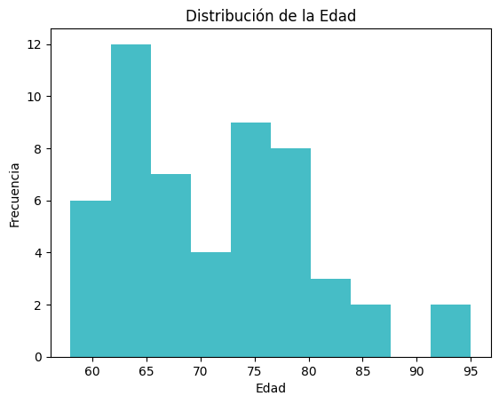
bins = [54, 64, 74, 84, 100]
labels = ['55-64', '65-74', '75-84', '85+']
df['Grupo de Edad'] = pd.cut(df['Edad'], bins=bins, labels=labels, right=True)
colores = {
'Masculino': '#1f77b4',
'femenino': '#2ca02c'
}
conteo = df.groupby(['Grupo de Edad', 'Sexo']).size().unstack(fill_value=0)
porcentajes = conteo.div(conteo.sum(axis=1), axis=0) * 100
ax = porcentajes.plot(kind='bar', figsize=(8, 6),
color=[colores.get(col, '#cccccc') for col in porcentajes.columns])
plt.title('Distribución porcentual por Grupo de Edad y Género', fontsize=14, fontweight='bold')
plt.xlabel('Grupo de Edad', fontsize=12)
plt.ylabel('Porcentaje (%)', fontsize=12)
plt.legend(title='Género', title_fontsize=12)
plt.xticks(rotation=0)
plt.grid(axis='y', linestyle='--', alpha=0.5)
for p in ax.patches:
height = p.get_height()
if height > 0:
ax.annotate(f'{height:.1f}%',
(p.get_x() + p.get_width() / 2, p.get_y() + height / 2),
ha='center', va='center', fontsize=9, color='white')
plt.tight_layout()
plt.show()
C:\Users\KELLY\AppData\Local\Temp\ipykernel_29564\2443322882.py:9: FutureWarning: The default of observed=False is deprecated and will be changed to True in a future version of pandas. Pass observed=False to retain current behavior or observed=True to adopt the future default and silence this warning.
conteo = df.groupby(['Grupo de Edad', 'Sexo']).size().unstack(fill_value=0)
df['Cantidad de Enfermedades'] = df['¿Presenta alguna de las siguientes enfermedades crónicas?\n(Puede seleccionar más de una opción)'].str.split(',').apply(len)
df['Cantidad de Medicamentos'] = df[' Medicamentos formulados\n (Puede seleccionar más de una opción)'].str.split(',').apply(len)
df[['¿Presenta alguna de las siguientes enfermedades crónicas?\n(Puede seleccionar más de una opción)', 'Cantidad de Enfermedades','Cantidad de Medicamentos']].head(10)
| Cantidad de Enfermedades | Cantidad de Medicamentos | |
|---|---|---|
| 0 | 1 | 1 |
| 1 | 2 | 1 |
| 2 | 1 | 2 |
| 3 | 2 | 1 |
| 4 | 3 | 3 |
| 5 | 1 | 1 |
| 6 | 1 | 1 |
| 7 | 3 | 1 |
| 8 | 4 | 2 |
| 9 | 1 | 1 |
import numpy as np
import matplotlib.pyplot as plt
medicamentos = df[' Medicamentos formulados\n (Puede seleccionar más de una opción)'] \
.str.split(',') \
.explode() \
.str.strip() \
.str.lower() \
.value_counts()
plt.figure(figsize=(9, 6))
colores_medicamentos = plt.cm.viridis(np.linspace(0, 1, len(medicamentos)))
ax1 = medicamentos.plot(kind='bar', color=colores_medicamentos, edgecolor='black')
plt.title('Frecuencia de Medicamentos Formulados', fontsize=14)
plt.xlabel('Medicamentos', fontsize=12)
plt.ylabel('Cantidad de Pacientes', fontsize=12)
plt.xticks(rotation=45, ha='right')
for p in ax1.patches:
height = p.get_height()
if height > 0:
ax1.annotate(f'{int(height)}',
(p.get_x() + p.get_width() / 2, height),
ha='center', va='bottom', fontsize=10)
plt.tight_layout()
plt.show()
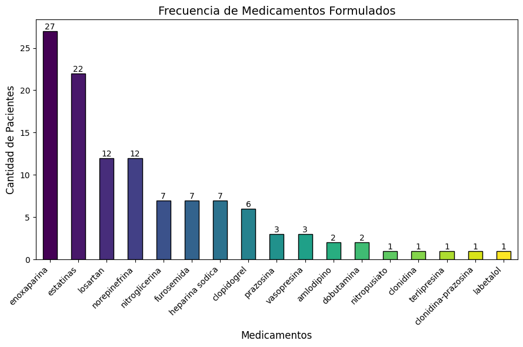
medicamentos_ = df[' Medicamentos formulados\n (Puede seleccionar más de una opción)'] \
.dropna() \
.str.lower().str.strip().str.split(',') \
.explode().str.strip()
frecuencia = medicamentos_.value_counts().reset_index()
frecuencia.columns = ['Enfermedad', 'Frecuencia']
print(frecuencia)
Enfermedad Frecuencia
0 enoxaparina 27
1 estatinas 22
2 losartan 12
3 norepinefrina 12
4 nitroglicerina 7
5 furosemida 7
6 heparina sodica 7
7 clopidogrel 6
8 prazosina 3
9 vasopresina 3
10 amlodipino 2
11 dobutamina 2
12 nitropusiato 1
13 clonidina 1
14 terlipresina 1
15 clonidina-prazosina 1
16 labetalol 1
bins = [0, 3, float('inf')] # Rango menor que 3 medicamentos, 3 o más medicamentos
labels = ['Menor que 3', '3 o más']
df['Cantidad de Medicamentos Categorica'] = pd.cut(df['Cantidad de Medicamentos'], bins=bins, labels=labels, right=False)
print(df[['Cantidad de Medicamentos', 'Cantidad de Medicamentos Categorica']].head())
Cantidad de Medicamentos Cantidad de Medicamentos Categorica
0 1 Menor que 3
1 1 Menor que 3
2 2 Menor que 3
3 1 Menor que 3
4 3 3 o más
conteo = df.groupby(['Grupo de Edad', 'Cantidad de Medicamentos Categorica']).size().unstack(fill_value=0)
porcentajes = conteo.div(conteo.sum(axis=1), axis=0) * 100
colores = {
'Menor que 3': '#1f77b4',
'3 o más': '#ff7f0e'
}
ax = porcentajes.plot(kind='bar', figsize=(10, 6),
color=[colores.get(col, '#cccccc') for col in porcentajes.columns])
plt.title('Distribución porcentual por Grupo de Edad y Cantidad de Medicamentos', fontsize=14, fontweight='bold')
plt.xlabel('Grupo de Edad', fontsize=12)
plt.ylabel('Porcentaje (%)', fontsize=12)
plt.legend(title='Cantidad de Medicamentos', title_fontsize=12)
plt.xticks(rotation=0)
plt.grid(axis='y', linestyle='--', alpha=0.5)
for p in ax.patches:
height = p.get_height()
if height > 0:
ax.annotate(f'{height:.1f}%',
(p.get_x() + p.get_width() / 2, p.get_y() + height / 2),
ha='center', va='center', fontsize=9, color='white')
plt.tight_layout()
plt.show()
C:\Users\KELLY\AppData\Local\Temp\ipykernel_29564\388104843.py:5: FutureWarning: The default of observed=False is deprecated and will be changed to True in a future version of pandas. Pass observed=False to retain current behavior or observed=True to adopt the future default and silence this warning.
conteo = df.groupby(['Grupo de Edad', 'Cantidad de Medicamentos Categorica']).size().unstack(fill_value=0)
enfermedades = df['¿Presenta alguna de las siguientes enfermedades crónicas?\n(Puede seleccionar más de una opción)']\
.str.split(',') \
.explode() \
.str.strip() \
.str.lower() \
.value_counts()
abreviaciones = {
'No presenta enfermedades crónicas': 'No presenta',
'no presenta enfermedades crónicas': 'No presenta',
'Enfermedad pulmonar obstructiva crónica (EPOC)': 'EPOC',
'enfermedad pulmonar obstructiva crónica (epoc)': 'EPOC'
}
enfermedades.index = enfermedades.index.map(lambda x: abreviaciones.get(x.strip(), x.strip()))
colores_enfermedades = plt.cm.plasma(np.linspace(0, 1, len(enfermedades)))
plt.figure(figsize=(10, 7))
ax2 = enfermedades.plot(kind='bar', color=colores_enfermedades, edgecolor='black')
plt.title('Frecuencia de Enfermedades Crónicas', fontsize=14)
plt.xlabel('Enfermedades', fontsize=12)
plt.ylabel('Cantidad de Pacientes', fontsize=12)
plt.xticks(rotation=45, ha='right', fontsize=9)
for p in ax2.patches:
height = p.get_height()
if height > 0:
ax2.annotate(f'{int(height)}',
(p.get_x() + p.get_width() / 2, height),
ha='center', va='bottom', fontsize=10)
plt.tight_layout()
plt.show()
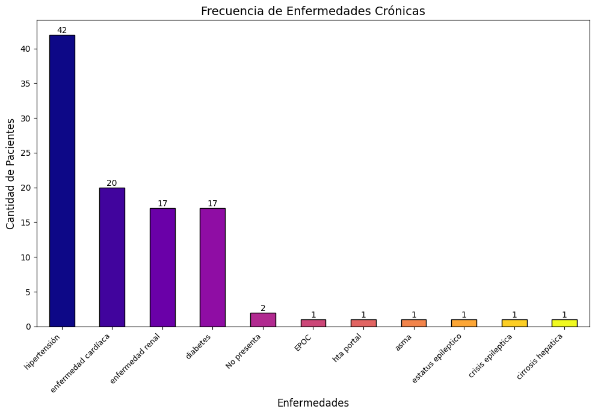
enfermedades = df['¿Presenta alguna de las siguientes enfermedades crónicas?\n(Puede seleccionar más de una opción)'] \
.dropna() \
.str.lower().str.strip().str.split(',') \
.explode().str.strip()
frecuencia = enfermedades.value_counts().reset_index()
frecuencia.columns = ['Enfermedad', 'Frecuencia']
print(frecuencia)
Enfermedad Frecuencia
0 hipertensión 42
1 enfermedad cardíaca 20
2 enfermedad renal 17
3 diabetes 17
4 no presenta enfermedades crónicas 2
5 enfermedad pulmonar obstructiva crónica (epoc) 1
6 hta portal 1
7 asma 1
8 estatus epileptico 1
9 crisis epileptica 1
10 cirrosis hepatica 1
bins = [1, 3, 5]
labels = ['2 Enfermedades o menos ', '3 Efermedades o más']
df['Cantidad de Enfermedades Categorica'] = pd.cut(df['Cantidad de Enfermedades'], bins=bins, labels=labels, right=False)
print(df[['Cantidad de Enfermedades', 'Cantidad de Enfermedades Categorica']].head())
conteo_ = df.groupby(['Grupo de Edad', 'Cantidad de Enfermedades Categorica']).size().unstack(fill_value=0)
porcentajes = conteo.div(conteo.sum(axis=1), axis=0) * 100
colores = {
'2 Enfermedades o menos ': '#1f77b4',
'3 Enfermedades o más': '#ff7f0e'
}
ax = porcentajes.plot(kind='bar', figsize=(10, 6),
color=[colores.get(col, '#cccccc') for col in porcentajes.columns])
plt.title('Distribución por Grupo de Edad y Cantidad de Enfermedades', fontsize=14, fontweight='bold')
plt.xlabel('Grupo de Edad', fontsize=12)
plt.ylabel('Cantidad de Personas', fontsize=12)
plt.legend(title='Cantidad de Enfermedades', title_fontsize=12)
plt.xticks(rotation=0)
plt.grid(axis='y', linestyle='--', alpha=0.5)
for p in ax.patches:
height = p.get_height()
if height > 0:
ax.annotate(f'{height:.1f}%',
(p.get_x() + p.get_width() / 2, p.get_y() + height / 2),
ha='center', va='center', fontsize=9, color='black')
plt.tight_layout()
plt.show()
Cantidad de Enfermedades Cantidad de Enfermedades Categorica
0 1 2 Enfermedades o menos
1 2 2 Enfermedades o menos
2 1 2 Enfermedades o menos
3 2 2 Enfermedades o menos
4 3 3 Efermedades o más
C:\Users\KELLY\AppData\Local\Temp\ipykernel_13072\1538064251.py:11: FutureWarning: The default of observed=False is deprecated and will be changed to True in a future version of pandas. Pass observed=False to retain current behavior or observed=True to adopt the future default and silence this warning.
conteo_ = df.groupby(['Grupo de Edad', 'Cantidad de Enfermedades Categorica']).size().unstack(fill_value=0)
df['Cantidad de Enfermedades']=df['Cantidad de Enfermedades'].astype(int)
df['Cantidad de Medicamentos']=df['Cantidad de Medicamentos'].astype(int)
tabla = df.groupby(['Cantidad de Enfermedades', 'Cantidad de Medicamentos']).size().unstack(fill_value=0)
plt.figure(figsize=(8, 6))
sns.heatmap(tabla, annot=True, fmt='d', cmap='Purples', cbar=True)
plt.title('Frecuencia combinada: Enfermedades vs Medicamentos')
plt.xlabel('Cantidad de Medicamentos')
plt.ylabel('Cantidad de Enfermedades Crónicas')
plt.tight_layout()
plt.show()
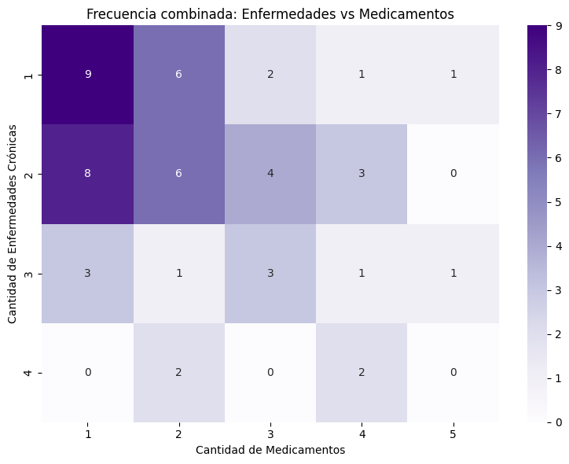
adminis = df[' ¿Cuál es la vía de administración del fármaco que administra al paciente? '] \
.dropna() \
.str.lower().str.strip().str.split(',') \
.explode().str.strip()
frecuencia = enfermedades.value_counts().reset_index()
frecuencia.columns = ['Enfermedad', 'Frecuencia']
print(frecuencia)
Enfermedad Frecuencia
0 subcutánea (sc) 30
1 intravenosa (iv) 26
2 via oral (v.o) 26
3 sonda nasogastrica (sng) 1
adminis = df[' ¿Cuál es la vía de administración del fármaco que administra al paciente? '] \
.dropna() \
.str.lower().str.strip().str.split(',') \
.explode().str.strip()
frecuencias = adminis.value_counts()
colores = plt.cm.plasma(np.linspace(0, 1, len(frecuencias)))
plt.figure(figsize=(8, 4))
ax = frecuencias.plot(kind='bar', color=colores)
plt.title('Vías de Administración de Fármacos', fontsize=14)
plt.xlabel('Vía de Administración', fontsize=12)
plt.ylabel('Cantidad de Pacientes', fontsize=12)
plt.xticks(rotation= 0, ha='right')
for p in ax.patches:
height = p.get_height()
ax.annotate(f'{int(height)}', (p.get_x() + p.get_width() / 2, height),
ha='center', va='bottom', fontsize=10)
plt.tight_layout()
plt.show()
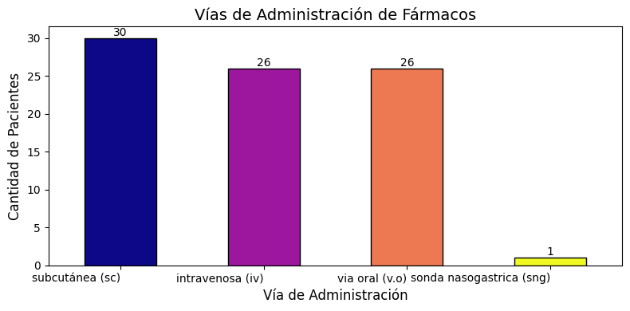
Objetivo 2#
df2=pd.read_excel('CRIMECRI RESPUESTAS.xlsx')
df2 = df2.drop(columns=['Hora de inicio', 'Hora de finalización'], errors='ignore')
recomendaciones = df2["¿Utilizó alguna recomendación de los criterios de la herramienta?."].value_counts()
print("Uso de recomendaciones de la herramienta:")
print(recomendaciones)
Uso de recomendaciones de la herramienta:
¿Utilizó alguna recomendación de los criterios de la herramienta?.
SI 50
NO 3
Name: count, dtype: int64
colores_azules = ['#219ebc', '#dde5b6']
plt.figure(figsize=(8, 6))
plt.pie(
recomendaciones,
labels=recomendaciones.index,
autopct='%1.1f%%',
startangle=140,
colors=colores_azules[:len(recomendaciones)],
wedgeprops={'edgecolor': 'white', 'linewidth': 1},
textprops={'fontsize': 11}
)
plt.title("Uso de recomendaciones de la herramienta", fontsize=16, color='#0d47a1', weight='bold')
plt.axis('equal')
plt.tight_layout()
plt.show()
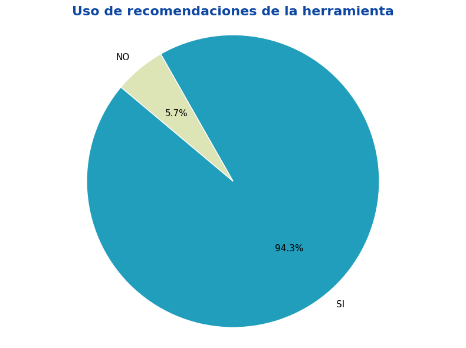
def clasificar_recomendacion(texto):
if pd.isna(texto) or str(texto).strip() == "":
return "Sin dato"
texto = str(texto).lower()
if "todas" in texto:
return "Todas"
elif "sangrado" in texto or "coagulación" in texto or "clopidogrel" in texto:
return "Vigilancia de sangrado"
elif "potasio" in texto or "katrol" in texto:
return "Vigilancia de potasio"
elif "signos vitales" in texto or "sv" in texto or "tensión arterial" in texto or "t/a" in texto or "cifras tensionales" in texto or "control hemodinámico" in texto:
return "Signos vitales"
elif "renal" in texto or "función renal" in texto:
return "Función renal/hepática"
elif "hepatica" in texto:
return "Función renal/hepática"
elif "ekg" in texto or "electrocardio" in texto or "arritmia" in texto:
return "EKG"
elif "gastrointestinales" in texto or "molestias" in texto or "síntomas" in texto and "gastro" in texto:
return "Vigilancia síntomas gastrointestinales"
elif "eventos adversos" in texto:
return "Eventos adversos"
elif "cuidados de enfermeria" in texto:
return "Cuidados de enfermería"
elif "monitorizcion" in texto or "monitorizacion" in texto:
return "monitorizacion estricta"
elif "c" in texto and texto.strip().startswith("c"):
return "Código clínico (otros)"
else:
return "Otra"
categoria = pd.read_excel('frecuencia_recomendaciones.xlsx')
categoria = categoria.drop(columns=['Frecuencia'], errors='ignore')
categoria
| Recomendación | Categoria | |
|---|---|---|
| 0 | vigilancia de sangrado | Vigilancia de sangrado |
| 1 | vigilancia de niveles de potasio | Vigilancia de niveles de potasio |
| 2 | molestias gastrointestinales | Vigilancia de molestias gastrointestinales |
| 3 | monitorización continua | Monitoreo (sin especificar) |
| 4 | niveles de potasio | Vigilancia de niveles de potasio |
| 5 | vigilancia de síntomas gastrointestinales | Vigilancia de molestias gastrointestinales |
| 6 | vigilancia de signos vitales | Monitoreo de signos vitales |
| 7 | vigilancia de función renal | Vigilancia de funcion renal |
| 8 | todas las indicadas | Todas las recomendaciones |
| 9 | se toma control de potasio diario. | Vigilancia de niveles de potasio |
| 10 | cifras tensionales | Monitoreo de signos vitales |
| 11 | síntomas de sangrado | Vigilancia de sangrado |
| 12 | vigilancia de signos | Monitoreo de signos vitales |
| 13 | signos vitales | Monitoreo de signos vitales |
| 14 | cuidados de enfermeria en paciente con nitratos | Todas las recomendaciones |
| 15 | vigilancia estricta de sangrado | Vigilancia de sangrado |
| 16 | vigilancia de ekg | EKG y monitoreo cardíaco |
| 17 | todas | Todas las recomendaciones |
| 18 | reposición de potasio oral | Vigilancia de niveles de potasio |
| 19 | vigilancia de arritmias | EKG y monitoreo cardíaco |
| 20 | vigilancia de niveles de katrol | Vigilancia de niveles de potasio |
| 21 | se realiza mediciones periódicas de niveles de... | Vigilancia de niveles de potasio |
| 22 | vigilancia de signos vitales por riesgo de hip... | Monitoreo de signos vitales |
| 23 | todas las recomendaciones | Todas las recomendaciones |
| 24 | signos de sangrado | Vigilancia de sangrado |
| 25 | vigilar interaccion y riesgo de sangrado con e... | Vigilancia de sangrado |
| 26 | monitorizacion de electrolitos | Monitoreo de electrolitos |
| 27 | vigilancia estricta de signos y síntomas de sa... | Vigilancia de sangrado |
| 28 | monitorización estricta de signos vitales | Monitoreo de signos vitales |
| 29 | el del clopidogrel | Vigilancia de sangrado |
| 30 | c4 | Vigilancia de niveles de potasio |
| 31 | vigilar tiempos de coagulación | Vigilancia de sangrado |
| 32 | vigilancia de sangrado y vigilancia de tiempos... | Vigilancia de sangrado |
| 33 | s | Monitoreo (sin especificar) |
| 34 | vigilancia estricta de signos vitales | Monitoreo de signos vitales |
| 35 | y electrolitos | Monitoreo de electrolitos |
| 36 | vigilancia de eventos adversos o aparición de ... | Vigilancia de molestias gastrointestinales |
| 37 | monitorizacion de signos vitales | Monitoreo de signos vitales |
| 38 | revisar niveles de potasio | Vigilancia de niveles de potasio |
| 39 | sugerir cambio del losartan por lesion renla a... | Vigilancia de funcion renal |
| 40 | no administrar el medicamento en conjunto con ... | Vigilancia de sangrado |
| 41 | monitorizacion de tension arterial | Monitoreo de signos vitales |
| 42 | vigilacia de signos vitales | Monitoreo de signos vitales |
| 43 | vigilar sangrado específicamente a nivel bucal | Vigilancia de sangrado |
| 44 | tensión arterial | Monitoreo de signos vitales |
| 45 | vigilancia de t/a | Monitoreo de signos vitales |
| 46 | vigilar molestias gastrointestinales | Vigilancia de molestias gastrointestinales |
| 47 | vigilar niveles de potasio cifras tensionales | Vigilancia de niveles de potasio |
| 48 | vigilancia de sintomas gastrointestinales | Vigilancia de molestias gastrointestinales |
| 49 | control hemodinámico | Control hemodinámico |
| 50 | vigilancia de niveles de potasio | Vigilancia de niveles de potasio |
| 51 | síntomas gastrointestinales | Vigilancia de molestias gastrointestinales |
| 52 | c3 | Vigilancia de molestias gastrointestinales |
| 53 | vigilancia de signos vitales - | Monitoreo de signos vitales |
| 54 | c13 | Control hemodinámico |
| 55 | monitorizcion estricta | Monitoreo (sin especificar) |
cat = categoria['Categoria'].value_counts().reset_index()
cat['porcent']= round(cat['count']*100/56)
cat
| Categoria | count | porcent | |
|---|---|---|---|
| 0 | Monitoreo de signos vitales | 13 | 23.0 |
| 1 | Vigilancia de sangrado | 11 | 20.0 |
| 2 | Vigilancia de niveles de potasio | 10 | 18.0 |
| 3 | Vigilancia de molestias gastrointestinales | 7 | 12.0 |
| 4 | Todas las recomendaciones | 4 | 7.0 |
| 5 | Monitoreo (sin especificar) | 3 | 5.0 |
| 6 | Vigilancia de funcion renal | 2 | 4.0 |
| 7 | EKG y monitoreo cardíaco | 2 | 4.0 |
| 8 | Monitoreo de electrolitos | 2 | 4.0 |
| 9 | Control hemodinámico | 2 | 4.0 |
colors = plt.cm.viridis(np.linspace(0, 1, len(cat['porcent'])))
plt.figure(figsize=(10, 6))
bars = plt.barh(cat['Categoria'], cat['porcent'], color=colors)
for bar, percentage in zip(bars, cat['porcent']):
plt.text(bar.get_width() , bar.get_y() + bar.get_height() / 2,
f'{percentage}%', va='center', fontsize=7)
plt.title("Categorías de recomendaciones", fontsize=14, color='#4A148C')
plt.xlabel('P', fontsize=14, color='#4A148C')
plt.ylabel('Recomendaciones', fontsize=14, color='#4A148C')
plt.tight_layout()
plt.show()
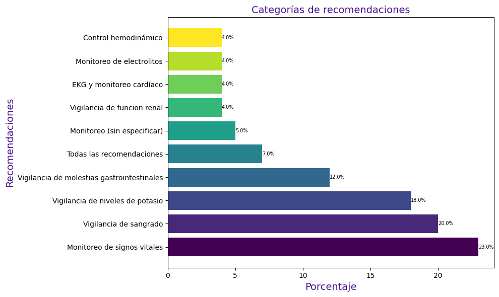
alternativas = df2["¿Utilizó alguna de las alternativas mencionadas en la herramienta?."].value_counts()
print("Uso de alternativas:")
print(alternativas)
Uso de alternativas:
¿Utilizó alguna de las alternativas mencionadas en la herramienta?.
NO 39
SI 14
Name: count, dtype: int64
colores_azules = ['#219ebc', '#dde5b6']
plt.pie(
alternativas,
labels=alternativas.index,
autopct='%1.1f%%',
startangle=180,
colors=colores_azules[:len(alternativas)],
wedgeprops={'edgecolor': 'white', 'linewidth': 1},
textprops={'fontsize': 11}
)
plt.title("Uso de alternativas de la herramienta", fontsize=16, color='#0d47a1', weight='bold')
plt.axis('equal')
plt.tight_layout()
plt.show()
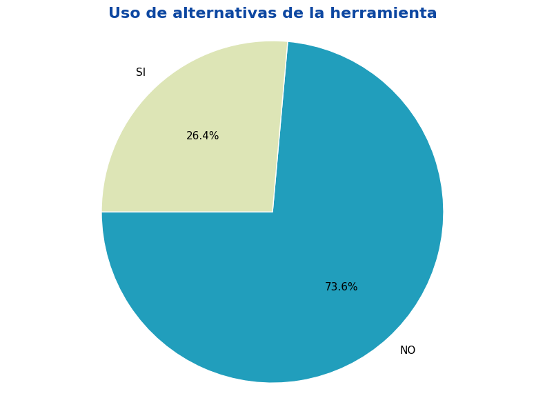
efectos = df2['¿Existe alguna otra interacción o efecto adverso, que no esté consignado en la herramienta?'].value_counts()
print("Uso de recomendaciones de la herramienta:")
print(efectos)
Uso de recomendaciones de la herramienta:
¿Existe alguna otra interacción o efecto adverso, que no esté consignado en la herramienta?
No 52
SI 1
Name: count, dtype: int64
Objetivo 3#
df3 = pd.read_excel('Formulario para la recopilación de Datos (Perfil enfermero)..xlsx')
df3 = df3.drop(columns=['Hora de inicio', 'Hora de finalización'], errors='ignore')
df3.columns
Index(['Id', 'Nombre ', 'Nivel educativo', 'Areas de desempeño actual',
'Años de experiencia en UCI'],
dtype='object')
print("Conteo por nivel educativo:")
print(df3['Nivel educativo'].value_counts())
print("\nConteo por área de desempeño actual:")
print(df3['Areas de desempeño actual'].value_counts())
Conteo por nivel educativo:
Nivel educativo
Maestría 4
Especialización cuidado crítico 4
Diplomado cuidado crÍtico 1
Name: count, dtype: int64
Conteo por área de desempeño actual:
Areas de desempeño actual
UCI Adulto 5
UCI 3
UCI intermedio 1
Name: count, dtype: int64
experiencia = df3['Años de experiencia en UCI']
resumen = {
'Media': [experiencia.mean()],
'Mediana': [experiencia.median()],
'Desviación estándar': [experiencia.std()],
'Mínimo': [experiencia.min()],
'Máximo': [experiencia.max()]
}
tabla_resumen = pd.DataFrame(resumen).T
tabla_resumen.columns = ['Valor']
print(tabla_resumen)
Valor
Media 7.888889
Mediana 6.000000
Desviación estándar 4.594683
Mínimo 1.000000
Máximo 15.000000
import matplotlib.cm as cm
porcentajes = df3['Nivel educativo'].value_counts(normalize=True) * 100
porcentajes_ordenados = porcentajes.sort_values()
plt.figure(figsize=(9, 5))
colores = cm.copper_r(np.linspace(0, 1, len(porcentajes_ordenados)))
porcentajes_ordenados.plot(kind='barh', color=colores)
plt.title('Distribución del nivel educativo de los evaluadores',weight= 'bold')
plt.xlabel('Porcentaje (%)')
plt.ylabel('Nivel educativo')
for index, value in enumerate(porcentajes_ordenados):
plt.text(value + 0.1, index, f'{value:.1f}%',fontsize=7, va='center')
plt.tight_layout()
plt.show()
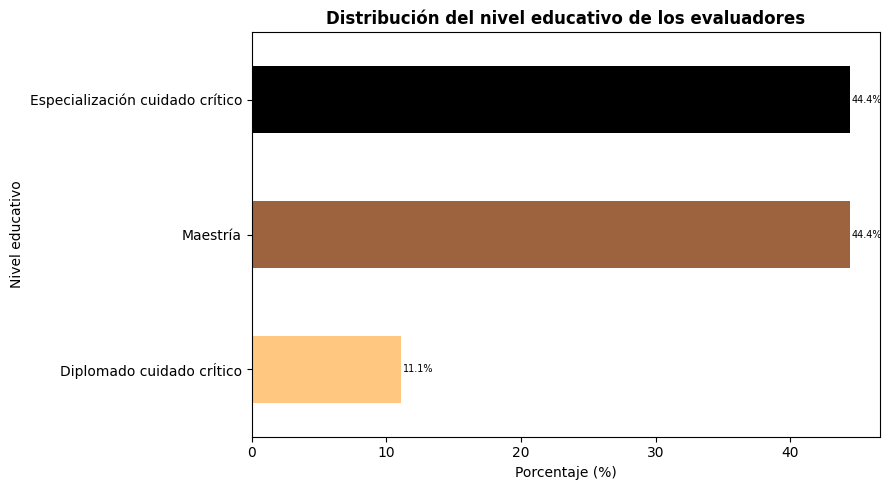
df4 = pd.read_excel('Utilidad y confiabilidad de la herramienta _CRIMECRI_ respuestas.xlsx')
df4 = df4.drop(columns=['Hora de inicio', 'Hora de finalización','Correo electrónico','Nombre'], errors='ignore')
data = {
'Pregunta': [
'Facil acceso desde dispositivos',
'Instrucciones comprensibles',
'Formato claro',
'Recomendaciones comprensibles',
'Alternativas terapéuticas comprensibles',
'Aplicables a la práctica clínica',
'Requiere entrenamiento previo',
'Identificación de interacciones graves',
'Recomendaría a otros profesionales'
],
'Sí (n)': [8, 9, 9, 8, 9, 7, 6, 9, 8],
'No (n)': [1, 0, 0, 1, 0, 2, 3, 0, 1]
}
df = pd.DataFrame(data)
df['Total'] = df['Sí (n)'] + df['No (n)']
df['% Sí'] = (df['Sí (n)'] / df['Total']) * 100
df['% No'] = (df['No (n)'] / df['Total']) * 100
bar_width = 0.35
index = np.arange(len(df))
fig, ax = plt.subplots(figsize=(11, 6))
bars_si = ax.barh(index, df['% Sí'], bar_width, label='Sí', color="#81b29a")
bars_no = ax.barh(index + bar_width, df['% No'], bar_width, label='No', color="#e07a5f")
ax.set_xlabel('Porcentaje de respuestas')
ax.set_title('Respuestas Sí / No a las preguntas')
ax.set_yticks(index + bar_width / 2)
ax.set_yticklabels(df['Pregunta'])
ax.legend()
for i in range(len(df)):
ax.text(df['% Sí'][i] + 0.5, i, f"{df['% Sí'][i]:.1f}%", va='center', ha='left', color='black', fontsize=7)
ax.text(df['% No'][i] + 0.5, i + bar_width, f"{df['% No'][i]:.1f}%", va='center', ha='left', color='black', fontsize=8)
plt.show()
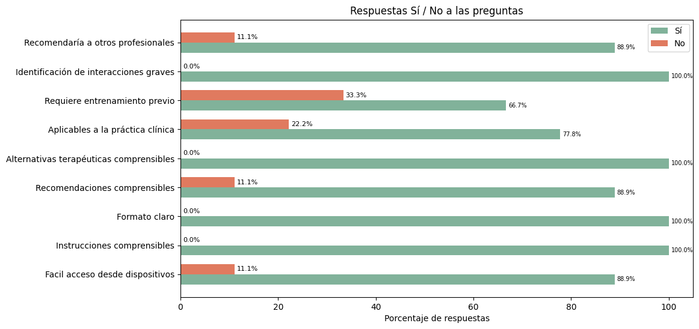
data = {
'Tiempo estimado para usar la herramienta': ['Menos de 5 minutos', 'Entre 5 y 10 minutos', 'Entre 10 y 15 minutos'],
'Frecuencia': [3, 5, 1],
'Porcentaje': [33, 56, 11]
}
df = pd.DataFrame(data)
colores = ['#1f77b4', '#2ca02c', '#0d3b66']
fig, ax = plt.subplots(figsize=(8, 6))
ax.bar(df['Tiempo estimado para usar la herramienta'], df['Porcentaje'], color=colores)
plt.title('Porcentaje de Tiempo Estimado para Usar la Herramienta', fontsize=14, fontweight='bold')
plt.xlabel('Tiempo estimado para usar la herramienta', fontsize=12)
plt.ylabel('Porcentaje (%)', fontsize=12)
plt.xticks(rotation=0)
for i, row in df.iterrows():
ax.text(i, row['Porcentaje'], f"{row['Porcentaje']:.1f}%", ha='center', va='bottom', fontsize=10, color='black')
plt.grid(axis='y', linestyle='--', alpha=0.5)
plt.tight_layout()
plt.show()
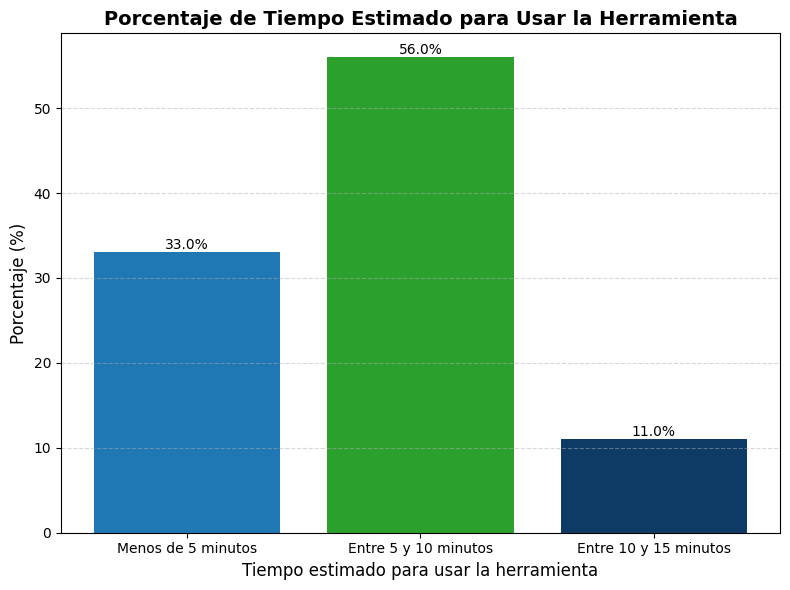